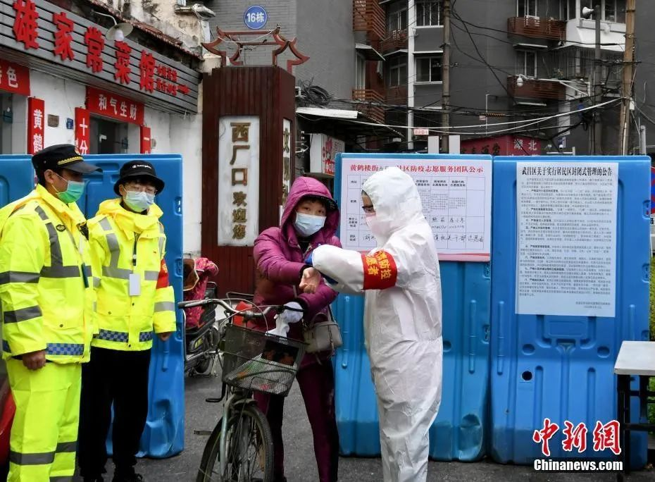
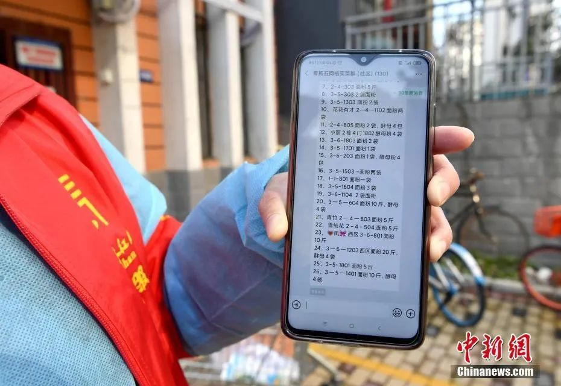

在现场 | 我在武汉清理医疗垃圾：不置身事外，所有人才能得救
原文链接 备份链接 口述 马洪全 采写 谢如颖 图片 陈玮曦 马洪全今年 27 岁，在武汉生活了 3 年多，本职工作是一名金融销售。2 月 9 日，武汉某医院招募志愿者，负责病房消毒和清理医疗垃圾。这大概是此次疫情中非医护人员所能从事的最 …


🎧 点击上方图片，跳转「故事FM」小程序，收听真人讲述。记得添加「我的小程序」，一键收听全部故事哟！
在这次疫情期间，故事FM 采访过武汉的医生、方舱医院的确诊者、还有武汉的癌症患者……，我们试图通过武汉各种群体的故事，让大家了解身处疫情核心的处境。
这次武汉封城，根据路透社的说法，是人类近代史上第一例将 1100 万人口的大城市采取封锁的措施。这样一个举措，需要无数细小的齿轮在里面协同工作。而和武汉市民直接发生关系的岗位，就是社区工作者。
今天我们就请一位武汉的社区工作者——由生来说说他的体验。
-1-
逆向而行
我是大年初三、初四值班，本以为值完班以后，我还能休息三天。
哪知道我初四晚上一回家，书记就在群里通知：初五全员到岗。一看到这个消息，我马上开始酝酿歪心思，想找不去的办法。
谁能真的像大家说的那样逆向而行？我没有那么高尚，我真的害怕。但我没有办法，我必须去。
以前过年值班的时候，社区安排一个人值一天。封城以后，情况比较严重，所以安排两个人值班。值班以后，我们的电话没断过，这种说法一点都不夸张。还有很多人在微信群里说电话根本打不进去，其实就是太多人在给我们打电话。
很多人有一点轻症就打电话给社区，我们都建议他们自己在家观察几天。还有人直接来社区，所以我们两人一个负责接电话，一个人负责接待来社区的人。

■社区工作人员接听电话 图/新华社
那时候，病人不停地增加，几天下来，我们登记了 100 多个发烧的病人。而别的社区可能只有十几个或三十几个。和他们相比，我们这边的发烧病人太多了。我和同事都知道，很多医院的医护人员住在我们这边，心里非常害怕。
那个时候各种消息闹得沸沸扬扬。家里人说，非典的病人就算治好了，也要长期吃药。这个病也可能是这样的。
他们担心，如果我是以现在的防护状态去上班，万一得了这个病怎么办？我妈每天早上起床之后，就坐在家门口，不让我出去。我只能在她睡回笼觉的时候溜出去。大概两、三次以后，她明白没法拦我了，她知道管不住我。
我承认我是那种小市民，但是我见过太多束手无策的家庭了，如果我停止工作了他们就不知道该找谁了。
-2-
在风险和疑问中排查病人
我们单位发了两种防护服。一种是白色连体防护服，数量很少，我们社区只领到十套，我从来没有穿过。
供应充足些的是另一款黄色的防护服。穿上以后，人的膝盖以下都会露在外面，它根本套不住全身。衣服的面料也是薄薄的，带点小孔可以透气，不能起到防护的作用。我们在排查的时候都穿这款。

■黄色防护服 图/讲述者提供
我一个人负责整个小区，需要和下沉党员干部排查总共 1300 户家庭。排查的主要内容是：家里住了几口人、是否是业主/租户、有无发热情况/购药购菜需求/个性化需求。排查的主要目的就是发现潜在的病例。
我们会在名单上把有患者、密切接触人员或者疑似病例的家庭标注出来，到了他家所处的那一层，我们会注意一下，尽量离他们家远一点，少说话，再把口罩封得严实一些。但我们穿的还是那款黄色防护服。
在排查的时候，也有可能遇到在 14 天内没有爆发出症状的病人，这应该就是潜在的风险。
我更在意的是排查发热病人的方式到底有没有用。比如说，某家庭有三个人，其中一人发烧了，但只是轻微的发烧，所以家里不想把他送到医院去。当排查的人问：你们家有几口人？他们可能说他们家有两口人，那么排查人员就会记成两口人。如果他们说家里有三口人，没有人发热。排查人员也只能记录：无人发热。
我认为这样的排查方式是无用的，因为只有派出所才会知道每一户真正有几口人。何况还可能有住户直接不开门、不发出声音，坐在家里等我们离开。
我妈妈就问过我：你们这排查有用吗？连个门都不进。但问题是别人不让我们进门，我们自己也不敢进门。我跟同事也探讨过，我们都觉得现在的排查工作是无用功。
当然，这仅仅针对发热病人，不针对其他排查内容。比如，住户会和我们讲想买什么药品，他们的需求。

■工作人员登记居民所需代购物品清单 图/中新社
-3-
社区没有任何权力
刚封城没多久的时候，一个业主的妈妈自己估计有 99% 的可能性是新冠肺炎，但那时候核酸检测还没结果。
封城以后，车不能出小区，这个业主便给社区打电话说想送妈妈去看病，要社区派车。可那时候规定，社区派的车只能用来保障民生生活，不能用来托送疑似或发烧的病人。后来我听说他妈妈在家里晕倒，他打电话给 120。可是，120 根本忙不过来，有 500 个病人在他前面排队等车。
后来他打电话给 110，诉求是想找人把他的妈妈抬到他们家自己的车上，送到医院去。110 说，他们没有防护措施，不能去抬。
最后，他打电话到我们社区，让社区的人去抬。那个时候我们的防护措施只有有口罩和那款只能当做心理安慰的防护服，我们也没有办法去抬。
他说，好，你等着我马上来社区！然后直接跑到了我们社区。他是密接人员，但没有戴口罩，一进门就把门口拦着的两张桌子踢了，然后不停地骂我们。我们所有人都不敢面对他，赶快往旁边走或从后门走。那个场面让我一生难忘。
第二天，他妈妈就被确诊。到了晚上，他又来了。社区是24小时值班制，那时候只有同事一个人在，他吓得连门都不敢开。
说实话，这种事情我已经见得太多了。那时候，每个人都认为社区可以直接帮他联系到医院、帮他住院、帮他联系到车。任何人都觉得社区有权力帮他做任何就医的事情。
但其实，社区能做的只是上传下达。我们让居民等，是因为上面要我们等。我们能起到的作用只是登记。
那时候，微博上常常有人求助，说到社区不管他们，其实我们并没有不管。只要是居民报给社区的内容，我们都在往上报，只是要走正常的流程，要排队。
我还遇到过帮居民联系到医院后，居民选择不去的情况。
有一个患者是癌症病人，他之前去了医院，医院建议他马上住院，让他找社区帮忙联系能够办理住院的医院。我们就按照非新冠的危重病人把他报上去，给他联系医院。他当时要求只去没有新冠病人的医院。
后来，我们联系上了一家前期是新冠病人的医院。所有新冠病人都被分流出去以后，这个医院现在专门收治非发热病人。但患者还是说不去了。这样的情况我遇到过两例。

■社区志愿者为居民检测体温 图/中新社
-4-
可爱的志愿者
方舱医院的建成，让很多需要被收治的、疑似的患者都有了去处，而小区里居家隔离的人也在锐减。现在的情况已经没有那么恐怖了。
我手上有差不多 20 多个志愿者，都是在一个平台上面招募的。发给他们的防护服只有 20 套，只够这些人用一天。他们每天穿一次，然后用酒精消毒，第二天接着穿。我自己在单位只戴口罩工作，只会在上门的时候穿一下防护服。我真的想把防护服节省下来给他们穿。
有一天，我跟同事下班后在路上聊天，我先后问了三个同事：如果不做这份工作的话，你们会出来做志愿者吗？他们都说，只会呆在家里，不敢出来当志愿者。后来，我反问自己这个问题，我好像也不会选择做志愿者。
志愿者里有个年轻女孩，前天晚上和我聊天的最后一句话让我很震撼。她说：一切为了群众。她今年只有 20 岁，而我在 20 岁的时候是绝对说不出这种话的。我觉得志愿者真是太可敬、太可爱的一群人。

■社区居民的生活必需品微信需求群 图/中新社
-5-
被理解
工作相对轻松一些后，居民和社区之间的摩擦也是不断。
今天发生了一件事。一个业主打电话到社区，说他女儿上网课的资料需要打印，自己买不到打印机。他发给我的是一个 PDF 文档，我搞了半天转成 WORD 之后，又因为纸张的问题，好久没有调出来格式。这时候刚好有批蔬菜送来，需要我去拖，我就跟他说有事要忙一下，他可以直接来我们社区自己打印。
等到我把事情忙完了，就看到他发微信骂我，大意是：你这个眼子闹得好大呀，先说帮我打，现在又打不出来……类似这种话。
每次想到自己目前的状态，我都会可怜自己。在武汉这样一个城市，我每个月到手 2364 块，而且社区的定义好像是民间自治组织，我们是没有编制的。我们每个人的医保、社保，再加上公积金一共是 570 多块。
有时候看到网上的新闻，里面提到要给一线的医护人员孩子高考、中考加 10 分；湖北省内全部景点免费为他们开放 5 年。昨天又看新闻讲到医护人员能回家休息，轮岗 6 天。为什么没有人看到社区的工作人员呢？为什么只有医护人员算一线，我们社区工作人员不算一线？
我承认他们担的风险比我们高，但为什么没有人注意到社区的工作人员每天是怎样地过？我不是要攀比白衣天使，我只是觉得，为什么差别会这么大？

■社区工作人员宣传抗疫知识 图/中新社
有一次我给一位空巢老人送菜的时候，她拉着我非要给我钱，我告诉她这是免费的。在我临上电梯之前，她对着我敬了一个礼。
进电梯后，我在里面狂哭。我不知道是因为我可怜，还是因为他们也可怜。也许这是可怜人碰到可怜人才会有的感觉吧。
那一刻，我觉得前面所有的委屈都是可以原谅的。哪怕世界上所有人都是坏人，只要有一个人对我好，有一个人理解我，或者说理解我的工作，我就能接受之前的所有不公。
——————
到今天为止，武汉已经封城 42 天了，全国各地也已经进入严控的状态 40 余天。这对社区工作者来说是极大的考验，也是对所有居民的考验。
疫情面前，我们每个人都会碰到别人无法察觉的困扰，每个人都渴望得到更多的倾听和同情。希望双方都能多一份理解，让防疫工作顺利进行，也让我们的社区变得更温暖。
-封面图来源 中新社
未注明来源图片由 讲述者 提供

Staff
讲述者 | 由生
主播 | @寇爱哲
制作人 | 闰土
声音设计 | 孙泽雨
文字 | 闰土
运营 | 翌辰
BGM List
01.Story FM Main Theme (Under The Sewer) - 彭寒
02.Robert Haigh - Sons Of Light (Prelude)
故事FM
用你的声音，讲述你的故事
苹果播客 | 网易云音乐 | 蜻蜓 FM | 喜马拉雅
QQ 音乐 | 荔枝FM | 懒人听书 | 酷狗音乐
均可收听

▼ 点击「阅读原文」，讲出你的故事
故事FM
支持故事FM
长按二维码向我转账
支持故事FM
受苹果公司新规定影响，微信 iOS 版的赞赏功能被关闭，可通过二维码转账支持公众号。
原文链接 备份链接 口述 马洪全 采写 谢如颖 图片 陈玮曦 马洪全今年 27 岁，在武汉生活了 3 年多，本职工作是一名金融销售。2 月 9 日，武汉某医院招募志愿者，负责病房消毒和清理医疗垃圾。这大概是此次疫情中非医护人员所能从事的最 …
原文链接 备份链接 文/六筒 李岩半年前刚去过武汉，和家人去旅游，主要想看看黄鹤楼。那还是夏天，热气蒸得人头上冒烟。高温挡不住蜂拥的游客，摩肩接踵，拥塞的车辆在大道上艰难挪动。“真是个大都市”，她想。 李岩是河北医科大学第二医院呼吸与危重 …
原文链接 备份链接 ********** *****除夕那段时间主要是无序，工作量大、急迫，突然之间与病毒狭路相逢，刺刀见红，没有后援，只有拼命，那个时候是一片混沌状态。现在有所好转，形势每天都不一样，我每天处理的问题也不一样，还都是紧急 …
原文链接 备份链接 易慧是援助武汉的主治医师，她与同事一起进行了一次对重症新冠病人的抢救。记者详细复盘了手术的细节，记录了医生在条件受限的情况下如何判断病情、选择手术方案，最终艰难完成。 这场手术看起来惊心动魄，却是武汉医院里的日常。 …
原文链接 备份链接 ▍自从疫情以来，我们在网上听到了太多精神疾患病友缺药断药的消息与求救。传染病从不平等地影响每一个人，总是有些群体与个体在疫情中，受到更多的影响与伤害，其中就包括我们广大的精神疾患病友们。 他们或者因为社区封锁、医院停 …